Отряды
ОтрядыОтряды 1–4: кого куда ставить
Отряд — это 5 героев и их солдаты. Сила отряда = правильные герои + правильная расстановка + бонус одной фракции. Одни и те же герои могут выиграть или проиграть — всё зависит от того, кто где стоит.
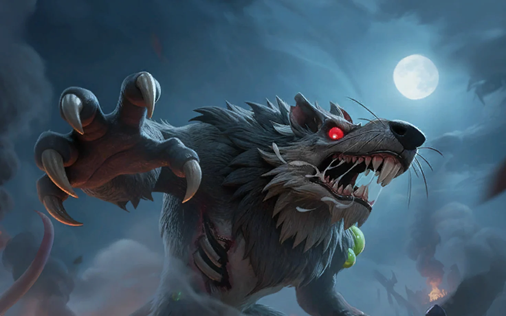

2 впереди, 3 сзади
Впереди два танка. Сзади два героя урона и одна поддержка.
Все 5 одной фракции
Весь отряд получает +20% к атаке, здоровью и защите.

Отряд 1 — главный
Он же твоя защита на арене. Все ресурсы — в него.

Босс без танков
Король демонов не бьёт в ответ — ставь только урон и поддержку.
Кто стоит впереди, кто сзади — и почему
На картинках боя ниже подписи вида «1-3»: первая цифра — отряд (1 — твой, 2 — враг), вторая — место героя по этой схеме.
Как идёт бой — три этапа
Враг делится на две группы. Его места 1, 3 и 4 бьют твоё место 1, а места 2 и 5 — твоё место 2. Значит, в место 1 бьют трое, в место 2 — двое.
Это переломный момент: все пятеро врагов переключаются на оставшегося танка.
Обычно это конец боя.
Вывод: в место 1 — самого живучего танка (Артур). Танк сзади никого не защитит, а хрупкий герой урона впереди умрёт первым.
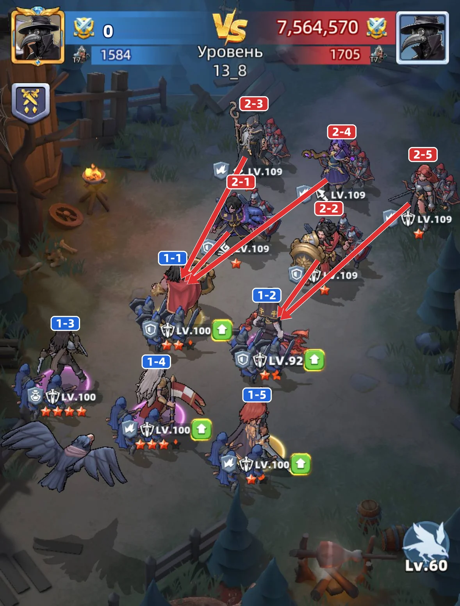
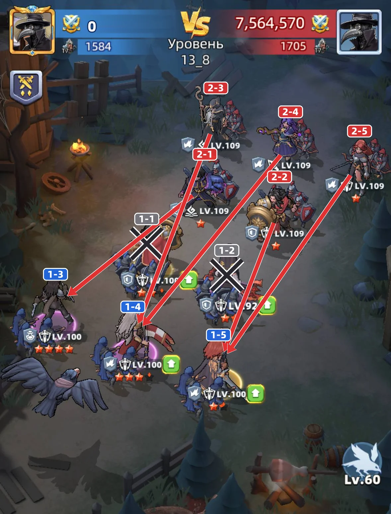
Бонус за героев одной фракции
Если в отряде несколько героев одной фракции (Воины, Рейнджеры или Колдуны), весь отряд получает прибавку к атаке, здоровью и защите:
| Кто в отряде | Прибавка |
|---|---|
| 3 героя одной фракции | +5% |
| 3 одной + 2 другой фракции | +10% |
| 4 героя одной фракции | +15% |
| Все 5 одной фракции | +20% |

Бонус включается не сразу — только после первого «Королевского переполоха» на сервере. Так написано в окне отряда.
Брать ли «чужого» пятого героя?
Если пятый герой твоей фракции намного слабее (мало звёзд, плохие навыки, нет снаряжения), а «чужой» сильный — оставь чужого. 4 своих + 1 чужой даёт +15%, и это нормально.
Переходи на всех пятерых одной фракции, когда пятый герой нормально держит свою роль. Позже эпиграфы Ворона, которые работают только на одну фракцию, сделают такой отряд ещё сильнее.
Как проверить: не смотри на число мощи. Поменяй героя и сравни результат: тот же соперник на арене, тот же урон по боссу.
Кто кого бьёт
 Воины
Воины
Сильнее Рейнджеров, слабее Колдунов.
Артур, Марлена, Харпер, Даскал, Белла, Клэр…
 Колдуны
Колдуны
Сильнее Воинов, слабее Рейнджеров.
Ульфрид, Энни, Джестер, Гренвальд, Стеллар, Хастар…
 Рейнджеры
Рейнджеры
Сильнее Колдунов, слабее Воинов.
Шэдоу, Синтия, Красная леди, Луи, Белл, Гриффит…
Зачем нужен каждый отряд
| Отряд | Когда открывается | Для чего | Кого ставить |
|---|---|---|---|
| Отряд 1 | Святилище 4 | Главный боевой: монстры, штурмы, Король демонов, КвК. Он же защита на арене. | 5 лучших героев, лучше одной фракции. Всё снаряжение и навыки — сюда. |
| Отряд 2 | Святилище 8 | Второй боевой: вторая цель, гарнизон в КвК, оборона. | Следующие 5 героев. Хорошо собрать из другой фракции — против тех, кто сильнее твоего первого отряда. |
| Отряд 3 | Святилище 20 | Сбор ресурсов и гарнизон. | Кто остался. Для сбора важны солдаты высокого уровня, а не звёзды героев. |
| Отряд 4 | Святилище 5 + месячный пропуск | Сбор (пропуск даёт +15% скорости сбора) или ещё один боевой. | Как отряд 3. Пропуск кончился — отряд 4 не работает. |
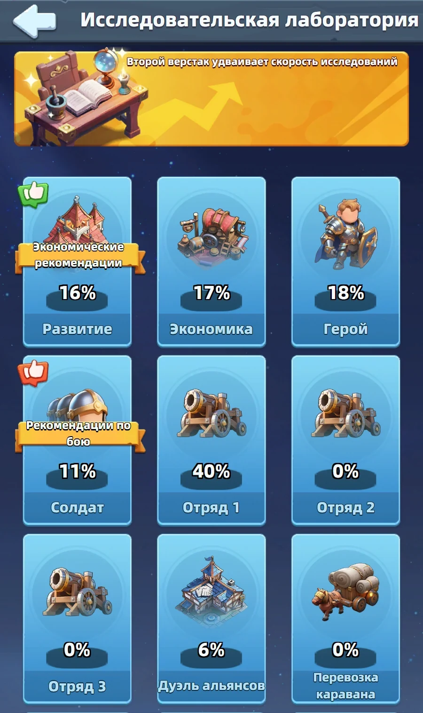
Своя ветка у каждого отряда
В Исследовательской лаборатории у отрядов свои плитки — «Отряд 1», «Отряд 2», «Отряд 3» (рамки); процент на плитке — сколько ветки уже изучено.
Ветки отрядов 1 и 4 дешёвые — качай. Ветка 2 дороже в 15 раз, ветка 3 — в 76 раз: в них бери только защиту и здоровье.
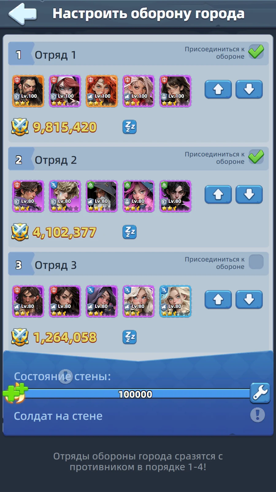
«Настроить оборону города»
Нажми на Стены города. В окне — твои отряды по порядку: они сражаются с нападающим в порядке 1–4 (стрелки справа меняют порядок). Галочка «Присоединиться к обороне» (рамка) — отряд защищает город.
Перед днём набега в Дуэли (суббота) сними галочку у сильных отрядов: если щит слетит, потеряешь меньше. К Осаде нежити — поставь обратно.
С кем играть
Первые два — танки (места 1 и 2), остальные — урон и поддержка (места 3–5).
| Для чего | Места 1 → 5 |
|---|---|
| Новичок, бесплатно, все 5 Воинов (+20%) | Артур· Белла· Белла· Марлена· Марлена· Клэр· Клэр· Селия Селия |
| Совсем без золотых героев | Белла· 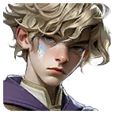 Гриффит·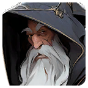 Гренвальд·Клэр·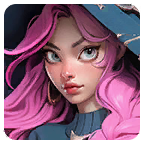 Стеллар |
| Нашествие крыс и Король крыс | Артур·Белла или Гриффит·Марлена·Гренвальд или Клэр·Стеллар |
| Против людей | Артур· Хастар·Марлена·Стеллар· Хастар·Марлена·Стеллар· Ульфрид или Гриффит или Клэр Ульфрид или Гриффит или Клэр |
| Все Воины, поздняя игра | Артур· 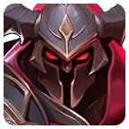 Даскал·Марлена· Зоя· Зоя· Харпер Харпер |
| Все Рейнджеры | 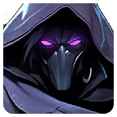 Шэдоу· Луи· Луи· Синтия· Синтия·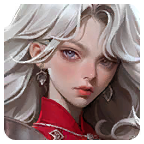 Красная леди· Белл Белл |
| Все Колдуны | Ульфрид· Билли· Билли·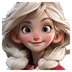 Энни· Николь· Николь· Джестер Джестер |
Против монстров (скверна)
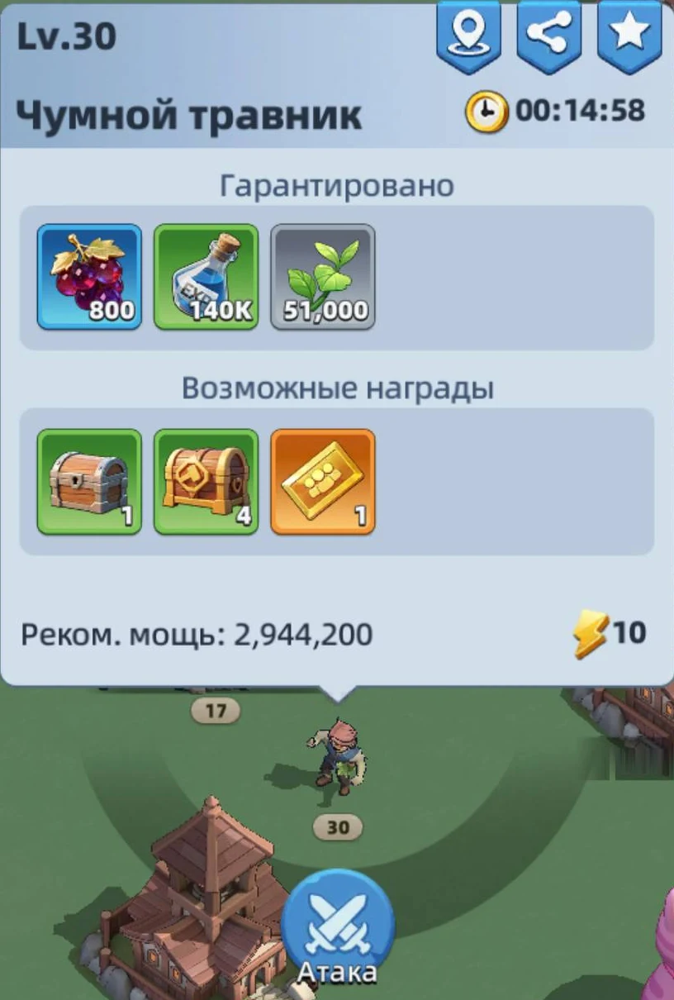
Нажми на монстра: «Реком. мощь» в рамке.
+20% ко всему. Монстры не «сильнее» какой-то фракции, поэтому отряд одной фракции здесь выгоднее всего.
Клэр (+15% урона по монстрам трём сильнейшим Воинам), Селия (урон по монстрам и больше ресурсов), Гренвальд, Стеллар. Белла и Луций снижают урон монстров по своим.
Фиолетовые вещи на 10, 20 и 30 уровне получают бонус против монстров. Подробно — в разделе Снаряжение.
Нажми на монстра на карте. Внизу окна — «Реком. мощь»: бей тех, у кого она ниже мощи твоего отряда. Выше — «Гарантировано» (что выпадет точно) и «Возможные награды», справа внизу — сколько энергии стоит удар (молния). Ударить — круглая кнопка «Атака» под монстром.
Против Короля демонов
Босс не бьёт в ответ, поэтому защита не нужна — только урон. Рейтинг дня — по твоему лучшему одному удару.
4 героя урона + 1 поддержка, или 3 урона + 2 поддержки, которые усиливают сразу нескольких.
Это начальный вариант. Потом пробуй переставлять по одному герою и записывай урон.
Пн и Чт — Воины, Вт и Пт — Колдуны, Ср и Сб — Рейнджеры. Насколько именно сильнее, игра не пишет. Но если герой нужной фракции намного слабее — бери своего прокачанного.
Они дают около 6% урона по монстрам и часто бьют сильнее золотых.
Включится «Боевое безумие» — удар станет сильнее.
Пример сильной связки: Марлена, Клэр, Синтия, Харпер, Белл. Харпер поднимает атаку всем и ещё больше Воинам, Белл — двум самым сильным и всем Рейнджерам, Клэр — урон по монстрам трём сильнейшим Воинам. Марлена получает сразу 4 усиления.
Следи за порядком: если Марлена ударила раньше, чем Харпер дал усиление, урон меньше.

Облик Святилища «Ворон Чёрная крепость»: просто иметь его — +1% урона по монстрам, надеть — ещё +5%.
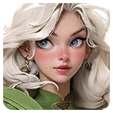
Из фиолетовых героев для босса стоит качать навыки только Эш (урон по боссу) и Селии (ресурсы).
Против людей и на арене
Против Воинов ставь Колдунов, против Колдунов — Рейнджеров, против Рейнджеров — Воинов.
Даёт +10% и позволяет не проигрывать вчистую никакой фракции. Если враг не сильнее твоей фракции — 4 + 1 (+15%).
Хастар, Стеллар, Ульфрид (отражает урон) в боях с людьми ценнее, чем против монстров.
Против людей нужны чистые характеристики золотых вещей, а не бонус против монстров.
Арена
- Здание Арены — со Святилища 7. Бои на арене солдат не убивают — рискуешь только местом в рейтинге.
- Обычная арена: 5 бесплатных боёв и 3 бесплатных обновления списка в день.
- Награды за место забирай руками каждый день — на следующий день они сгорают.
- Отряд 1 — твоя защита на арене. Поставь туда лучших.
- Старшие арены открываются по месту в рейтинге мощи сервера.
- Там, где нужно 3 отряда защиты, распредели силу ровно: врагу хватит выиграть 2 боя из 3.
Что ставить — куда идёшь
| Куда идёшь | Состав | Снаряжение |
|---|---|---|
 Скверна, монстры на карте Скверна, монстры на карте | 5 одной фракции, 2 танка, плюс Клэр / Селия / Гренвальд | Фиолетовое |
| Король демонов | Без танков: 4 урона + 1 поддержка, фракция дня | Фиолетовые наручи, лучшие мечи героям урона |
 Сырная ловушка, Охотничий бой Сырная ловушка, Охотничий бой | Одна фракция, 2 танка, урон и поддержка | Фиолетовое |
 Город игрока, КвК Город игрока, КвК | 2 танка, фракция сильнее вражеской, 3+2 или 4+1 | Золотое |
| Арена | Лучшие 5 в отряде 1 | Золотое |
 Сбор ресурсов Сбор ресурсов | Любые герои, главное — солдаты высокого уровня | Неважно |